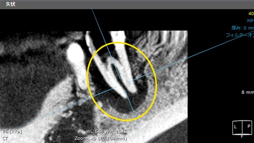
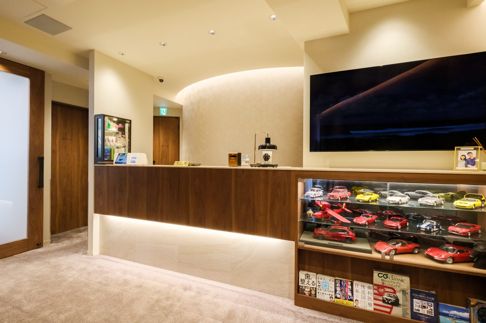

＼ その場で決める必要はありません ／まずは「検査だけ」でも
-
 01
01
お話をうかがう
どの歯について、どんな説明を受けたか。現在の症状と、これまでの治療の経過もうかがいます。
-

02CTで撮影
根の本数と形、膿の広がり、骨の量を立体的に確認します。通常のレントゲンで重なる部分も分かります。
-
 03
03
拡大して確認
最大20倍に拡大し、根のひびや、以前の治療で見つかっていなかった根管がないかを調べます。
-
 04
04
結果をお伝え
「残せる」「条件つきで残せる」「残すのは難しい」のいずれかと、通院回数・費用をお伝えします。
検査で確認する5つの点
- 1根が割れていないか
- 2膿がどこまで広がっているか
- 3支える骨がどれだけ残っているか
- 4歯ぐきより上に歯がどれだけあるか
- 5見つかっていない根管がないか
他院で受けた説明は、「右下の歯を抜くと言われた」のように口頭で十分です。レントゲンや資料をお持ちの方は、ご持参ください。
検査の所要時間と費用は、ご予約の際にお伝えします。結果を聞いたうえで、通院中の歯科医院で治療を続ける方もいらっしゃいます。
- 紹介状は不要
- レントゲンがなくても受診可
- 通院中の医院へは連絡しません
治療の前にご確認ください
費用と通院の目安
- ・自由診療（保険適用外）
- ・1歯 44,000〜198,000円（税込）
＋処置料 - ・被せ物と土台は別途
- ・通院3〜4回、1〜2か月が目安
- ・費用の詳細は「根管治療の費用」へ
主なリスク・副作用
- ・治療後に一時的な痛み・腫れが出ることがあります
- ・状態により、抜歯が必要になる場合があります
- ・再び感染し、再治療や外科的な処置が必要になることがあります
- ・神経を取った歯はもろく、被せ物で保護が必要です
- ・神経を取った歯は痛みを感じにくく、異常に気づくのが遅れることがあります。定期的に検診をお受けください
ご不明な点は、お電話（078-332-4182）でお問い合わせください。
＼ FAQ ／よくあるご質問
Q.「抜歯」と言われた段階でも
相談できますか
はい、ご相談いただけます。検査だけのご来院でも構いません。結果を聞いたうえで、通院中の歯科医院で治療を続ける方もいらっしゃいます。
Q.治療は痛いですか
麻酔をして治療するので、治療中に強い痛みを感じることはほとんどありません。ただし感じ方には個人差があり、治療後に一時的な痛みや違和感が出ることがあります。
Q.何回通いますか
通院は3〜4回が目安で、歯の状態によって変わります。治療の流れは「根管治療の流れ」でご説明しています。
Q.保険は使えますか
当院の精密根管治療は自由診療で、保険は使えません。費用の詳細は「根管治療の費用」をご覧ください。
Q.「残せない」と分かったら？
残せない歯に、残す治療を無理にお勧めすることはありません。インプラント・ブリッジ・入れ歯のどれが適しているかをご説明します。インプラントは提携先をご紹介します。
Q.通院中の医院に伝えずに
相談できますか
はい、構いません。別の歯科医院で意見を聞くことは、どなたでも自由にできます。当院から通院中の医院に連絡することはありません。
「抜くしかない」の
前に、
ご相談ください

JR三ノ宮駅西口から徒歩30秒
検査だけのご来院、セカンドオピニオンとしてのご相談もお受けしています。紹介状は不要で、その場で治療を決める必要はありません。
お電話でのご予約 078-332-4182 24時間受付 WEB予約 ›ご予約の際に「他院で抜歯と言われた歯の相談」とお伝えください。検査の時間を確保します。
- 月
- 10:00-15:00／17:00-19:00
- 火・水・金
- 10:00-13:30／15:00-19:00
- 土
- 9:00-12:30／14:00-18:00
- 休診
- 木・日・祝祝日のある週は木曜も診療